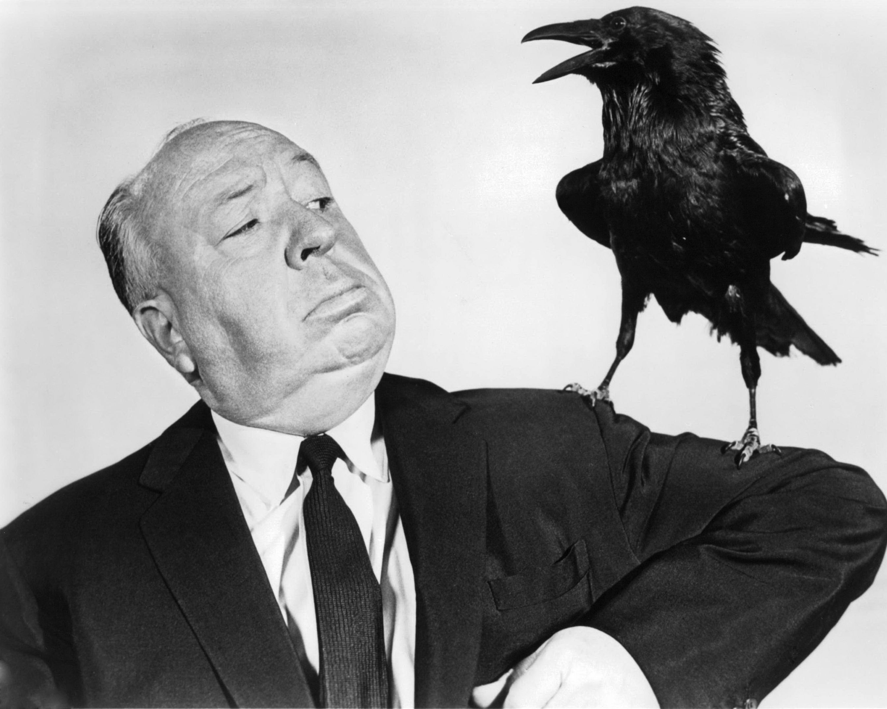

PSICOSE
O clássico de Alfred Hitchcock que redefiniu o suspense.
O clássico de Alfred Hitchcock que redefiniu o suspense.
Marion Crane é uma secretária que foge após roubar 40 mil dólares para recomeçar sua vida. Exausta e sob uma forte tempestade, ela decide passar a noite no decadente Bates Motel. Lá, ela conhece o jovem e tímido gerente Norman Bates, um homem com um forte apego à mãe — sem imaginar o terrível segredo que o lugar esconde.
Elenco: Anthony Perkins, Janet Leigh, Vera Miles, John Gavin

Sir Alfred Hitchcock foi um dos diretores mais influentes da história do cinema. Conhecido por pioneirar técnicas de suspense e terror psicológico, ele moldou o cinema moderno. Com 'Psicose', ele chocou o mundo em 1960, subvertendo expectativas e criando a icônica cena do chuveiro, considerada uma obra-prima de montagem e direção cinematográfica.